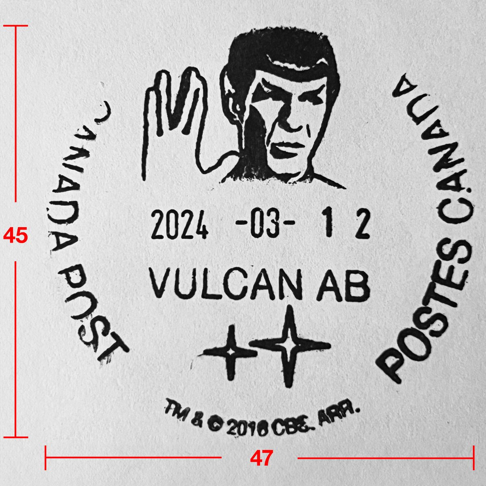

Vulcan PO pictorial cancel
Star Trek hand gesture
- Status
- Active
- Run dates
- 2015-01-01 to present
- Design
- Star Trek hand gesture
- Ink colour
- Black
- Designer
- Unknown
- Post office
- Vulcan PO
304 2 Ave S
Vulcan, AB
T0L 2B0 - Subjects
- pop culture, Star Trek, science fiction, fiction, TV, media
Collect it by mail. Send your stamped covers, with a stamped return envelope, to the post office address above. How to collect pictorial cancels by mail · en français
 Champion POWheat stalks
Champion POWheat stalks Nanton POLancaster Museum
Nanton POLancaster Museum